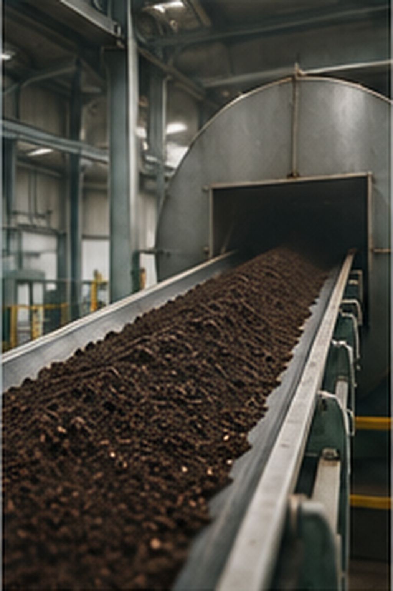

Kur tas noder jūsu saimniecībā.
Tālāk norādītās devas ir sākumpunkts, nevis priekšraksts. Kultūras un audzēšanas sistēmas atšķiras, tāpēc katru devu pārbaudiet nelielā izmēģinājumā.

Substrātu un augsnes maisījumu ražotāji
Organiska sastāvdaļa stādīšanas un sējas maisījumiem, arī receptēm ar samazinātu kūdras daudzumu.
Kur lieto
Iemaisa gatavā substrātā kā vienu no receptes sastāvdaļām.
Sākuma devas
Izmēģinājuma partijas sāciet ar aptuveni 10 % no tilpuma un devu pakāpeniski palieliniet. Mūsu ieteikums stādu audzēšanai: 1 daļa biohumusa uz 3 daļām kūdras vai augsnes.
Kam pievērst uzmanību
Gatavā maisījuma EC, pH un gaisa ietilpība. Mūsu datu lapā norādītais pH (KCl) ir 7,3.
Rezultāti
Izmēģinājumu rezultāti būs drīzumā.

Siltumnīcas un stādu audzēšana
Sējai, piķēšanai un izstādīšanai stikla un plēves siltumnīcās.
Kur lieto
Sējas un piķēšanas maisījumi gurķiem, tomātiem, paprikai un kāpostiem. Stādīšanas bedrītē, izstādot stādus.
Sākuma devas
Stādu maisījumi: līdz 1 daļai uz 3 daļām kūdras vai augsnes. Tomāti un gurķi: aptuveni 100 g katrā stādīšanas bedrītē, pēc tam aplaistīt.
Kam pievērst uzmanību
Lielas devas var paaugstināt EC. Pārbaudiet sāļu līmeni, un uz galdiem ar apakšējo laistīšanu vispirms veiciet izmēģinājumu.
Rezultāti
Izmēģinājumu rezultāti būs drīzumā.

Augļu dārzi un vīna dārzi
Iemaisa stādīšanas bedrē, stādot jaunus kokus, vīnogulājus un ogulājus.
Kur lieto
Jauni augļu koku un ogu krūmu stādījumi. Veģetācijas periodā reizi mēnesī apber ap ieaugušiem augiem.
Sākuma devas
Ābeles, bumbieres, ķirši un plūmes: 1,5–2 kg stādīšanas bedrē. Jāņogas un ērkšķogas: 1–1,5 kg. Zemenes: 150–200 g katram stādam. Par vīnogulājiem jautājiet mums un ieplānojiet izmēģinājuma rindu.
Kam pievērst uzmanību
Sajauciet to ar augsni bedrē, neatstājot slānī, un pēc stādīšanas aplaistiet.
Rezultāti
Izmēģinājumu rezultāti būs drīzumā.

Bioloģiskie dārzeņu audzētāji
Dobju sagatavošanai, stādu izstādīšanai un papildmēslošanai sezonas laikā gan tuneļos, gan atklātā laukā.
Kur lieto
Iestrādā dobēs pirms sējas vai stādīšanas. Ieber zem stādiem. Veģetācijas laikā apber ap augiem.
Sākuma devas
Sīpoli, burkāni un bietes: 0,5 kg uz m². Salāti, dilles un pētersīļi: 1 l uz vagas m². Kartupeļi: aptuveni 50 g zem katra cera. Sezonas laikā: aptuveni 1 l uz m² reizi mēnesī, iestrādājot augsnē un aplaistot.
Kam pievērst uzmanību
Vermikomposts ir atļauts ES bioloģiskajā lauksaimniecībā (Regula (ES) 2021/1165, II pielikums). Pārliecinieties savā sertifikācijas institūcijā.
Rezultāti
Izmēģinājumu rezultāti būs drīzumā.
Pirms pasūtīšanas veiciet izmēģinājumu.
Šajā lapā norādītās devas atbilst Latvijas Biohumusa ražotāju asociācijas ieteikumiem. Taču jūsu pašu salīdzinošais izmēģinājums pateiks vairāk nekā jebkura tabula.
Izvēlieties nelielu platību
Viena siltumnīcas sekcija, dažas rindas vai viena substrāta partija.
Atstājiet kontroli
Turpat blakus atstājiet neapstrādātu joslu.
Mēriet
Četras līdz sešas nedēļas pierakstiet apsakņošanos, augšanu un EC.
Izlemiet
Atsūtiet mums rezultātus, un kopā izrunāsim jūsu sistēmai piemērotāko devu.